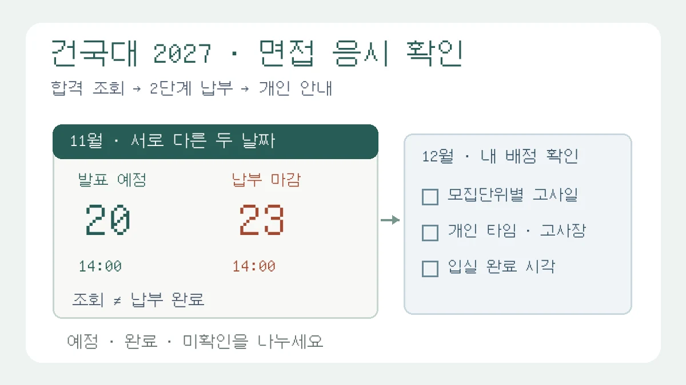

건국대 2027 KU자기추천, 1단계 합격 확인만 하면 면접을 볼 수 있을까?
건국대 서울캠퍼스 2027 KU자기추천의 1단계 발표·2단계 전형료 납부·개인별 고사 안내를 구분합니다. 모집단위별 날짜 차이와 공통 운영시간의 함정을 가상 메모 수정 사례로 점검합니다.

건국대학교 서울캠퍼스 2027학년도 학생부종합(KU자기추천) 지원자를 위한 실전 확인 안내입니다. 새로운 면접 개편 발표가 아니라, 현재 모집요강에 적힌 1단계 발표 뒤 2단계 전형료 납부와 개인별 고사 안내 확인을 나누어 읽습니다.[2] 2027학년도는 2026년 입시 시즌의 전형이며, 2028학년도 시행계획을 적용하지 않습니다.
“1단계에 붙으면 12월 면접 날짜만 기억하면 되나요?” 면접 답변을 열심히 연습하더라도 응시 절차를 별도로 챙겨야 합니다. 건국대 KU자기추천은 1단계 합격 확인으로 준비가 끝나는 전형이 아닙니다. 모집요강은 2단계 전형료를 기한 안에 내지 않으면 2단계 응시자격을 잃는다고 안내합니다.[2]
앞선 숭실대 해설이 활동의 실제 수정 과정을 복기했다면, 이번 글은 답변 내용이 아닌 응시 준비의 빈칸을 다룹니다. 오늘 남길 결과물은 화려한 자기소개 대본이 아니라, 확인할 날짜·완료 상태·아직 모르는 사항을 분리한 한 장의 확인표입니다.
무엇이 공개돼 있나: 1단계 발표와 납부 마감은 다릅니다
건국대의 「2027학년도 수시모집요강 안내」 공지는 2026년 5월 26일 등록됐고, 본문에는 5월 28일 검정고시 온라인 제공 대상 안내 추가라는 수정 설명이 있습니다.[1] 오늘 확인했다는 이유로 이 자료를 11월 7일 새 발표라고 부르지 않습니다.
현재 수시 모집요강 메뉴에서 내려받은 PDF의 23·31쪽에 따르면, KU자기추천의 1단계 합격자 발표는 2026년 11월 20일 금요일 14:00 예정입니다. 2단계 전형료 납부 기간은 1단계 합격자 발표 이후부터 11월 23일 월요일 14:00까지로 별도로 적혀 있습니다.[2] 14:00가 같은 숫자라고 해서 같은 날의 같은 절차로 묶지 마세요.
모집요강 76쪽의 KU자기추천 전형료 표에는 1단계 65,000원, 2단계 25,000원이 구분돼 있습니다. 23·76쪽은 기한 내 2단계 전형료 미납부 시 응시자격 상실을 명시합니다.[2] 처음 원서를 접수할 때 결제했다는 기억만으로 이번 납부까지 끝났다고 판단하지 않는 것이 이 글의 핵심입니다. 면제·환불 자격을 인정받은 지원자는 자신의 적용 상태와 처리 절차를 공식 안내에서 따로 확인하세요. 이 글은 개별 자격을 판정하지 않습니다.
적용 범위: 서울캠퍼스 KU자기추천을 기준으로 읽으세요
대상은 2027학년도 건국대 서울캠퍼스 학생부종합(KU자기추천) 지원자입니다. 모집요강 29쪽은 1단계 서류 100%로 3배수를 선발하고, 2단계에서 1단계 성적 70%와 면접 30%를 합산하며, 수능최저학력기준은 없다고 안내합니다.[2] 이 구조를 KU지역균형이나 다른 캠퍼스·대학의 전형에 옮겨 쓰면 안 됩니다.
같은 건국대라도 전형이 다르면 납부·면접 조건이 달라질 수 있습니다. 특히 특수교육대상자는 일정표에 함께 등장하지만 전형료 표에서는 면제로 구분되므로, 이 글의 KU자기추천 25,000원을 모든 면접 대상자에게 적용하지 마세요.[2] 먼저 접수한 전형명과 모집단위를 원서접수 내역에서 확인한 뒤 자기 전형의 표를 읽어야 합니다.
면접일은 ‘인문·자연’ 두 단어로 외우지 마세요
모집요강 29·31쪽은 KU자기추천 모집단위별 면접일을 2026년 12월 5일 토요일과 12월 6일 일요일로 나눕니다.[2] 계열 이름만으로 추측하기보다 본인의 학과가 어느 날짜에 놓였는지 직접 확인하세요.
- 12월 5일 사례: 경제학과·국제무역학과·응용통계학과는 사회과학대학에 속하지만 이 날짜에 안내돼 있습니다. 공과대학과 사범대학도 12월 5일입니다.[2]
- 12월 6일 사례: 같은 사회과학대학의 정치외교학과·행정학과는 12월 6일입니다. 건축대학·수의과대학·상허교양대학도 이 날짜에 들어갑니다.[2]
- 목록의 쓰임: 위 항목은 혼동을 보여 주기 위한 일부 사례입니다. 전 모집단위 목록을 대신하지 않으므로 모집요강 29쪽의 본인 모집단위와 표시, 31쪽 일정표를 함께 보세요.[2]
“사회과학대학이면 모두 같은 날”, “자연계열이면 모두 토요일”처럼 간단히 묶으면 실제 표와 어긋날 수 있습니다. 이동 계획은 대학 이름이 아니라 전형명 + 정확한 모집단위 + 고사일을 한 줄로 묶어 적는 데서 시작하세요. 이것은 편집팀의 준비 제안이지 별도의 대학 평가항목이 아닙니다.
공통 운영 시간은 내 입실시각이 아닙니다
모집요강 31쪽은 면접 고사장·입실 시간 등의 자세한 사항을 2단계 전형료 납부 후, 면접 3~4일 전 입학처 홈페이지에서 확인할 수 있다고 안내합니다. 수험생별 면접 일자와 시간은 변경할 수 없다고 적혀 있습니다.[2] 안내를 확인하는 시점을 납부 마감 이후로 구분하되, 그때까지 입학처 공지를 보지 않아도 된다는 뜻으로 읽지는 마세요.
같은 쪽의 오전 8:00 입실 시작~13:30 종료 예정, 오후 13:30 입실 시작~19:00 종료 예정은 여러 타임을 포함한 전체 운영 범위입니다. 요강은 오전·오후 각 4타임으로 진행할 예정이며 타임마다 입실·종료 시간이 다르고 변동 가능하다고 설명합니다.[2] 오전 대상이면 모두 8시에 도착하면 된다는 개인별 안내나, 오후 대상이면 19시까지 반드시 머문다는 확정 일정이 아닙니다.
개인별 안내가 나오면 ‘고사일 / 배정 타임 / 고사장 / 입실 완료 시각 / 준비물 / 금지사항’을 다시 옮겨 적으세요. 아직 발표되지 않은 고사장·신분증 인정 범위·개인별 마감시각을 작년 후기나 이 글이 대신 확정할 수는 없습니다. 교통편을 정할 때도 공통 종료 예정시각을 자신의 귀가 가능시각으로 단정하지 마세요.
교육용 가상 사례: 틀린 일정 메모를 확인표로 바꾸기
다음은 경제학과 KU자기추천 지원을 가정한 교육용 가상 메모입니다. 실제 수험생의 합격·납부·배정 결과가 아니며, 개인 조회 화면을 확인했다는 뜻도 아닙니다. 날짜와 전형료는 확인한 모집요강에 근거하되, 확인표를 만드는 방법은 편집팀이 제안합니다.[2]
수정 전
건국대 사회과학대학은 12월 6일. 11월 20일 합격하면 면접만 연습. 접수 때 결제했으니 추가로 할 일 없음. 오전이면 8시 입실.
이 메모는 대학 안의 모집단위별 날짜 차이, 2단계 납부, 개인별 입실 안내를 모두 빠뜨렸습니다. 다음처럼 ‘확인할 일’과 ‘완료한 일’을 분리해 고칩니다.
수정 후
내 지원은 서울캠퍼스 2027 KU자기추천 경제학과다. 요강상 면접일은 2026년 12월 5일이다. 11월 20일 14:00 예정인 1단계 결과를 입학처에서 직접 확인한다. 합격 시 11월 23일 14:00 마감 전 2단계 전형료 납부 안내에 따라 처리하고 완료 상태를 다시 확인한다. 개인별 타임·고사장·입실 완료 시각은 아직 확인 전이다. 면접 3~4일 전 안내를 다시 확인한다.
실제 합격 발표 전인 지금 이 메모의 상태는 ‘확인 예정’입니다. ‘납부 예정’을 ‘납부 완료’로 체크하거나, 안내를 읽은 것만으로 결제 처리가 끝났다고 기록하지 마세요. 실제로 처리한 뒤에는 공식 화면의 완료 상태와 처리 일시를 개인적으로 보관하되, 수험번호·생년월일·결제정보가 드러나는 화면을 공개 게시판에 올리지 않습니다. 납부 방식과 경로는 향후 본인에게 표시되는 공식 안내를 따르며 이 글에서 추정하지 않습니다.
탐구보고서·세특 복기는 응시 절차와 별도로 하세요
모집요강 72쪽은 KU자기추천 등 해당 학생부종합 면접을 제출서류에 기초한 개별면접으로 설명하고, 서류 진위여부 확인 및 인성평가를 면접내용으로 안내합니다. 평가자 2인 대 지원자 1인, 개인당 10분 내외이며 이름·수험번호·고교명을 블라인드 처리하고 고교를 나타낼 수 있는 교복 등은 금지합니다.[2]
학생부 활동을 돌아볼 때는 자신이 맡은 일, 자료를 고른 이유, 실제로 고친 부분을 당시 기록과 대조해 보세요. 하지만 보고서를 다시 읽는 학습과 보고서·확인표를 면접장에 추가 제출하거나 들고 들어갈 수 있는지는 다른 문제입니다. 이 글의 연습 메모는 개인 준비용이며 반입·제출을 허용하는 근거가 아닙니다. 현장 준비물과 금지사항은 올해 수험생 안내로 확인하세요.
연습 시간을 배정할 때도 두 줄로 나누어 두면 좋습니다. ‘답변 준비’에는 실제 활동의 근거와 모르는 개념을, ‘응시 준비’에는 합격 조회·납부 완료·개인별 안내 확인을 적습니다. 답변을 잘 외웠다는 이유로 절차 확인을 생략하지 않고, 확인표를 잘 썼다는 이유로 합격이나 점수가 보장된다고 생각하지 않는 것입니다.
지금 할 일과 다음 확인 시점
- 오늘: 접수 내역에서 전형·모집단위를 확인하고, 1단계 발표 예정일·2단계 납부 마감·본인 모집단위 면접일을 서로 다른 항목으로 적습니다. 요강에서 읽은 정보와 개인 배정 결과를 구분합니다.
- 11월 20일: 요강상 14:00 예정인 발표를 공식 홈페이지에서 직접 확인합니다. 1단계 합격자와 최초합격자는 개별 통보하지 않는다고 24쪽에 안내돼 있습니다.[2] 문자나 전화가 오기만 기다리지 마세요.
- 1단계 합격 후: 요강상 11월 23일 14:00까지의 2단계 전형료 납부를 처리하고 공식 완료 상태를 확인합니다.[2] 문제가 생기면 마감 직전까지 기다리지 말고 입학처의 안내·문의 경로를 이용합니다.
- 면접 전: 요강이 안내한 면접 3~4일 전 공개 사항과 이후 수정 공지를 확인하고, 개인별 고사장·입실·준비물·금지사항을 최종 점검합니다.[2] 아직 모르는 항목은 임의로 채우지 않습니다.
작은 산출물로는 다음 한 줄이면 충분합니다. ‘전형·모집단위 ___ / 발표 조회 ___ / 2단계 납부 ___ / 고사일 ___ / 개인 안내 ___ / 확인한 원문과 시각 ___’. 각 빈칸에 예정·완료·미확인을 표시하고, 완료로 바꾸기 전에 실제 처리 결과를 다시 보세요.
불확실성: 11월 7일 확인은 최종 개인 배정 확인이 아닙니다
2026년 11월 7일 확인한 수시 공지 목록에는 10월 28일자 논술고사 유의사항이 있었으나, KU자기추천의 이번 면접 개인별 안내는 확인하지 못했습니다.[3] 논술 안내의 입실·준비물을 학생부종합 면접에 그대로 가져오지 않습니다. 이후 발표·납부 안내와 면접 직전 수험생 공지에서 변경 여부를 다시 확인해야 합니다.
모집요강은 일정이 변경될 수 있고 변경 시 입학처 홈페이지에 공지한다고 밝힙니다.[2] 이 글은 현재 모집요강에 따른 준비 순서를 설명할 뿐, 향후 공지나 지원자 본인의 조회 결과보다 우선하지 않습니다. 실제 납부·개인 배정 조회는 수행하지 않았으며, 이를 대신 완료했다고 표시하지 않습니다.
관련 기존 가이드
- 학생부 기반 면접 준비 가이드 — 응시 확인표와 별도로 실제 활동의 답변 근거를 정리하세요.
- 면접 꼬리질문 점검 가이드 — 본인 역할과 판단 이유를 다시 물었을 때 설명이 이어지는지 확인하세요.
- 탐구보고서 처음 쓰기 가이드 — 새 보고서를 시작하는 학생은 답할 수 있는 질문과 자료 범위를 먼저 정하세요.
공식 출처와 확인 범위
현재 모집요강 메뉴의 88쪽 단면 PDF에서 책자와 PDF가 같은 쪽수인 23~24·29·31·72·76쪽을 중심으로 확인했습니다. 공지 첨부의 44쪽 펼침면 PDF도 대조했으며, 책자 30~31쪽은 그 PDF 16쪽, 책자 76~77쪽은 PDF 39쪽입니다. 핵심 납부 마감·금액과 면접 일정이 일치하는지 확인했고[2][4] 운영 조건은 현재 모집요강 메뉴 연결본을 기준으로 삼았습니다. 공지 등록일·명시된 수정일·우리 글 확인일을 구분했으며, 파일명으로 새 발표일을 추정하지 않았습니다. 공식 PDF·도표·사진·문항은 재게시하지 않았습니다. 가상 메모·확인표와 일러스트는 독립적으로 작성한 교육용 자료입니다.
이 칼럼은 운영자의 관점과 일반 교육 정보를 담고 있으며 특정 대학 합격이나 평가 결과를 보장하지 않습니다.
함께 볼 글

학생부 기반 면접 준비: 영역별 활동 복기와 꼬리질문·STAR·PREPNEW
세특·창체·공동체 활동을 동기·과정·결과·성찰로 정리하고 실제 기여와 한계를 설명하는 서류 기반 면접 연습법입니다.

학생부 기반 대입 면접 꼬리질문 점검표: 주장·근거·한계 연결하기NEW
보고서의 핵심 주장에 조건과 반대 질문을 붙여, 근거를 찾을 수 있는 답변과 아직 확인하지 못한 답변을 구분합니다.

탐구보고서 쓰는 법: 형식 6요소와 서론·본론·결론 실제 예시NEW
탐구보고서의 기본 구조 6요소와 작성 순서, 한 가지 가상 예시로 완성하는 서론·본론·결론 문장, 하루 30분씩 5일 작성 계획과 수정 기록 방법을 정리한 대표 작성 가이드입니다.